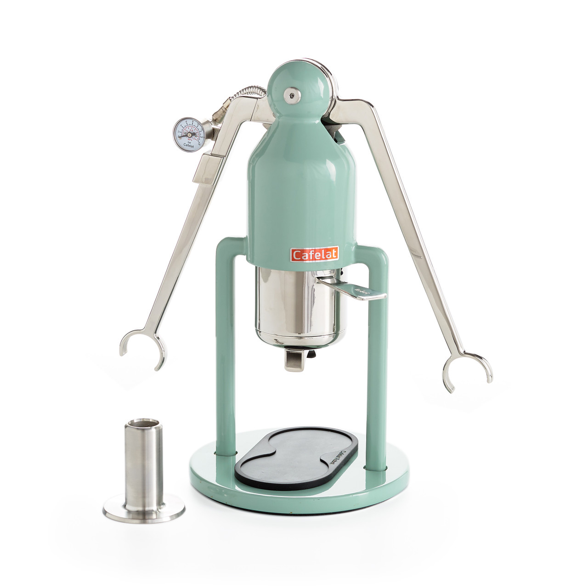

Cafelat Robot

Description
Using the Cafelat Robot, we are able to pull a manual espresso shot.
It does require a lot of practice, but it is definitely a rewarding skill.
- 17 grams of coffee beans
- JX-Pro Grind at 14-17 clicks depending on bean
- 60g of water
- Expect about 38g of espresso
- Grind all the beans. Tip, as the beans get older you may need a finer grind.
- Boil your water
- Add beans to the basket
- Use distribution tool to spread out beans, then tamp!
- Add filter to the top, then add all the water
- Lock the basket, slowly start pulling and watch the pressure!